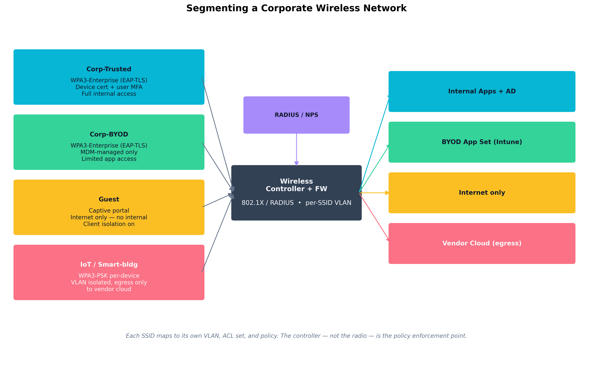
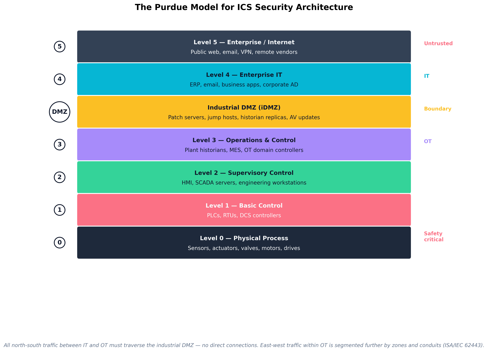

Chapter 10: Securing Specialized, OT, and Legacy Systems
Aligned SecurityX Objectives:
- 1.3: Explain how compliance affects information security strategies.
- 3.5: Given a set of requirements, secure specialized and legacy systems against threats.
Cloze Problem Set: Nick Chopper Segments the Yellow Brick Plant Floor
Learning Outcomes:
- Analyze the security requirements of Operational Technology (OT), including SCADA, ICS, and HVAC systems.
- Design security controls for Internet of Things (IoT), System-on-Chip (SoC), and embedded systems.
- Implement security measures for wireless and radio frequency (RF) technologies.
- Formulate segmentation, monitoring, and hardening strategies for highly constrained environments.
- Evaluate industry-specific challenges in securing specialized systems (Utilities, Healthcare, Manufacturing).
- Design compensating controls for obsolete, unsupported, and legacy systems.
- Assess the environmental, regulatory, and safety implications of securing OT and legacy infrastructure.
Introduction
The systems in this chapter were not designed for the threat model of the modern internet. A programmable logic controller running on the floor of a manufacturing plant may have been commissioned in 1998 and is still doing exactly the job it was bought to do. A water utility's SCADA system was assumed to be air-gapped — until somebody added a remote-access tool during the pandemic and forgot to remove it. An insulin pump's firmware was certified by a regulator on the implicit assumption that it would not be on a public network. A wireless security camera installed by a building-services contractor still runs the firmware it shipped with five years ago.
Each of these systems carries constraints that ordinary IT controls cannot easily accommodate. Some cannot be patched without recertification. Some run on processors with no room for an EDR agent. Some control physical processes where a wrong instruction kills people. Some communicate over RF or proprietary fieldbuses that traditional network defenses cannot inspect.
This chapter is about the security architecture that can protect these systems: layered segmentation that puts strong boundaries between IT and OT; hardening and monitoring tuned to constrained devices; industry-specific frameworks (NERC CIP, HIPAA, IEC 62443) that codify the expectations; and the discipline of compensating controls — protections you add around a system precisely because the system itself cannot be made directly secure.
How is OT Different from IT?
Operational Technology (OT) is the hardware and software that monitors and controls physical processes — turbines, valves, conveyors, traffic lights, building HVAC, hospital infusion pumps, refinery cracking towers. Its priorities, constraints, and threat model are systematically different from those of corporate IT, and applying IT thinking unmodified to OT is a recipe for both bad security and bad operational outcomes.
SCADA, ICS, and HVAC Systems
A few terms get used loosely; pinning them down matters.
- Industrial Control System (ICS) is the umbrella category for any system that monitors or controls physical processes.
- SCADA (Supervisory Control and Data Acquisition) is a specific style of ICS architecture in which a central server collects telemetry from geographically distributed remote sites — typical of utilities, pipelines, and water treatment.
- DCS (Distributed Control System) is an ICS architecture in which control is distributed across many processors within a single facility — typical of refineries, chemical plants, and power generation.
- PLC (Programmable Logic Controller) is the workhorse small computer that reads sensor inputs, runs a control program, and drives outputs — usually to actuators. Allen-Bradley, Siemens, Schneider, and Mitsubishi dominate the market.
- RTU (Remote Terminal Unit) is similar to a PLC but optimized for remote / field deployment, often with cellular or radio connectivity.
- HMI (Human-Machine Interface) is the operator's window into the process — graphical screens, alarms, manual control.
- Historian is the time-series database that records every measured tag for compliance, troubleshooting, and analytics.
- HVAC, Building Management Systems (BMS), and physical access control systems are OT in everything but name. They run on the same constrained processors, speak the same kinds of fieldbus protocols, and are connected to the same corporate networks — but are typically owned by Facilities, not IT.
Example
Following a sensor reading from Level 0 to the historian
At a natural gas compression station, a pressure transducer on a pipe junction sits at Level 0. Every two seconds, the transducer's analog signal is read by a PLC at Level 1. The PLC runs its control logic locally: if pressure exceeds the setpoint, close the control valve; if below, open it.
The PLC also reports measured values to a SCADA server at Level 2, which aggregates readings from all PLCs in the facility, runs supervisory logic, and drives the operator's HMI screen. The operator watches a live process graphic; alarms appear when values stray outside bounds.
The SCADA server forwards a summary to the Level 3 historian, which records every tag at one-second resolution for compliance reporting and troubleshooting. An OT firewall sits between Level 3 and the corporate IT network at Levels 4/5. The historian can push data outbound to a reporting server on the IT side — but the IT network cannot initiate connections inbound into the OT environment.
The security architect's job is to ensure that boundary holds: telemetry aggregates up the Purdue levels, control stays local, and anything compromised on the IT side cannot reach the PLCs at Level 1.
Safety and Environmental Constraints
The single most important fact about OT is that the priorities are inverted. In IT, the canonical CIA triad is Confidentiality → Integrity → Availability. In OT it is closer to Safety → Availability → Integrity → Confidentiality, with safety as a gating concern that supersedes everything else. A false-positive IT block on an email is annoying. A false-positive OT block on a control message can kill someone or trigger an environmental release.
This inversion has practical consequences:
- Patching is rare and scheduled. Production lines and turbines run for months between maintenance windows. A patch that requires a reboot may have to wait six months.
- Active scanning is dangerous. A network scanner sending unexpected packets to a 25-year-old PLC has a credible chance of crashing it. Discovery in OT relies on passive monitoring (Claroty, Nozomi Networks, Dragos) that listens to the wire without injecting traffic.
- Authentication is often weak by design. Many fieldbus protocols (Modbus, DNP3, EtherNet/IP, S7) were specified before authentication was considered necessary. Anyone on the OT network who can reach a PLC can usually issue commands to it.
- Lifetimes are measured in decades. A 1998 PLC running today is normal. Replacing it requires regulatory recertification, downtime, and a capital project.
- Compliance and safety regulators outrank the CISO. A change to a safety-related control system may require sign-off from process safety engineers, regulatory bodies, and external auditors — not just IT security.
| Property | Traditional IT | Operational Technology (OT) | IoT |
|---|---|---|---|
| Top priority | Confidentiality | Safety, then availability | Cost / time-to-market |
| Asset lifetime | 3–5 years | 15–30 years | 2–10 years (often unsupported sooner) |
| Patch cadence | Monthly / on demand | Annual maintenance window | Vendor-dependent, often never |
| Active scanning | Standard | Risky — passive monitoring preferred | Often crashes the device |
| Authentication on protocol | Standard (TLS, Kerberos) | Frequently absent (Modbus, DNP3) | Frequently absent or weak |
| Encryption | Default | Often unsupported by legacy PLCs | Often unsupported |
| EDR / agents | Yes | Rarely supported | Almost never supported |
| Connectivity | Internet by default | Air-gapped or DMZ-isolated | Ubiquitous, often direct cloud |
| Failure consequence | Data loss / outage | Equipment damage, environmental release, injury | Privacy violation, botnet enrollment |
| Table 10.1: IT, OT, and IoT operate under fundamentally different constraints. Security architecture has to respect those differences — IT controls applied unmodified to OT typically either break the process or fail to reduce risk. |
Case Study
Nick Chopper Air-Gaps the Yellow Brick Assembly Lines
Nick Chopper, OT Engineer at Yellow Brick Manufacturing, walks the plant floor with the new CISO on her first day. Yellow Brick produces aluminum extrusions on six assembly lines, four of which date to a 1998 expansion. Each line is anchored by Allen-Bradley ControlLogix PLCs, Rockwell HMIs running on Windows XP industrial PCs, and a dozen smart sensors and drives connected over EtherNet/IP. There are no firewalls between these systems and the corporate IT network. There is, however, a single internet-facing remote-access PC that a vendor used to log in for support during the pandemic and that nobody has touched since.
The CISO asks the obvious question: what is the worst case if someone ransomwares the plant floor tonight? Nick's answer: the lines stop, but more importantly, a wrong command to the extrusion press could send 800-degree-Celsius aluminum into the operator stations. Two operators have been seriously injured by lesser process upsets in the plant's history; the safety case is not theoretical.
Nick's program over the next twelve months produces a textbook IT/OT segmentation, executed without disturbing production:
- Network discovery via passive monitoring. Before changing anything, Nick deploys passive sensors at the existing core switch SPAN ports. After thirty days he has an asset inventory the plant has never had before — every PLC, every drive, every legacy serial-to-Ethernet bridge, every accidentally connected HVAC controller, and the previously forgotten remote-access PC.
- Industrial DMZ. A dedicated firewall pair is installed between the corporate network and OT, with a small DMZ hosting a patch-distribution server, a jump host (PAM-managed, MFA-required, session-recorded), and a one-way historian replica. No direct connections between corporate and OT are permitted; everything that needs to cross goes through the DMZ.
- Zone and conduit segmentation per IEC 62443. Each assembly line becomes its own OT zone with its own VLAN. Conduits between zones are explicitly enumerated. The forgotten internet-facing PC is removed entirely — vendor remote support now goes through the jump host on a scheduled, approved basis.
- Endpoint hardening of the engineering workstations. The Windows XP industrial PCs cannot be upgraded without recertifying the line. Nick instead air-gaps them from the internet, deploys application allowlisting, removes USB write capability except by exception, and wraps them in network ACLs that allow only the protocols their controllers actually need.
- Detection. The passive monitoring stays in production, feeding a SIEM with OT-specific rules — unexpected firmware writes, off-hours engineering connections, Modbus / EtherNet/IP traffic between lines that have no business talking to each other.
Twelve months later, Yellow Brick has not had a production-impact incident, has passed its first formal IEC 62443 audit, and has a network diagram its insurance carrier is finally willing to accept. Nick reports two unexpected wins: the asset inventory turned up six PLCs nobody knew were on the network, and the jump host's session recording paid for itself the first time a vendor's remote technician made a configuration mistake — the recording let the team understand and reverse the change without an outage.
How Do We Secure IoT and Embedded Systems?
The Internet of Things (IoT) is the broad category of low-power, network-connected devices designed for specific purposes: smart thermostats, security cameras, industrial sensors, medical monitors, connected vehicles, building access readers, point-of-sale terminals. They share constraints — small CPUs, little memory, limited power, often no display — that rule out many ordinary security controls and create a distinctive threat model.
System-on-Chip (SoC) and RF Technologies
Most IoT devices are built around a System-on-Chip (SoC) — an integrated circuit combining CPU, memory, peripheral interfaces, radios, and often a small security coprocessor onto a single die. Common families include the Nordic nRF series, Espressif ESP32, NXP i.MX, and Qualcomm IoT chipsets. The security primitives the SoC ships with — secure boot, hardware key storage, true random number generators, optional secure enclaves — define the floor of what is achievable on the finished device. A device built on an SoC without secure boot cannot be retrofitted to have secure boot.
RF (Radio Frequency) technologies are the layer below the IP network for most IoT. The major families:
- Wi-Fi — Standard 2.4/5/6 GHz IP networking, but power-hungry by IoT standards.
- Bluetooth / BLE — Short-range, paired connections (headsets, wearables, keyless locks).
- Zigbee and Z-Wave — Mesh networks for home and building automation.
- LoRaWAN — Long-range, low-bandwidth, license-free spectrum for sensors that send tiny payloads occasionally.
- NB-IoT and LTE-M — Cellular variants designed for low-power IoT.
- 5G with network slicing — Allows operators to provision isolated "slices" of the network with specific latency and security guarantees for industrial applications.
Each technology has its own pairing model, encryption defaults, and historical vulnerabilities. The architect's job is rarely to redesign the protocol; it is to know which protocol a device speaks and what controls are available at that protocol layer.
Wireless Security Considerations
The corporate wireless network is its own domain of failure. The basic threats — rogue access points, evil-twin attacks, deauthentication floods, weak pre-shared keys, and clients that auto-associate with familiar SSID names regardless of what is broadcasting them — have been well understood for two decades. The current best-practice answer is layered:
- WPA3-Enterprise with EAP-TLS. Mutual certificate-based authentication between client and RADIUS server. WPA3 provides forward secrecy and resistance to offline dictionary attacks against the handshake.
- Per-SSID VLANs and ACLs. Each SSID maps to its own VLAN with a firewall policy appropriate to its trust level. The controller — not the access point — is the policy enforcement point.
- 802.1X with NAC. Endpoints prove device posture (encryption enabled, EDR present, OS version current) before being placed on the trusted VLAN; non-compliant devices land on a remediation network.
- Wireless IDS (WIDS). Continuous monitoring for rogue APs, evil twins, deauth attacks, and unauthorized clients in spaces where they should not be.
- Client isolation on guest SSIDs. Prevents one guest from attacking another.
- PSK rotation for IoT SSIDs. When per-device certificates aren't possible, individual pre-shared keys per device (sometimes called iPSK) at least limit the blast radius of one compromise.

Figure 10.1: A segmented wireless deployment maps each SSID to its own VLAN and policy. Corp-Trusted gets EAP-TLS with full internal access; Corp-BYOD gets EAP-TLS with MDM enforcement and a restricted app set; Guest gets internet only; an IoT/smart-building SSID gets per-device PSKs, client isolation, and egress only to the vendor cloud.
Figure 10.2: The Purdue Reference Model organizes ICS architecture into seven levels, with an industrial DMZ as the mandatory boundary between IT (Levels 4–5) and OT (Levels 0–3). All north-south traffic between IT and OT must traverse the DMZ; east-west traffic within OT is further partitioned into zones and conduits per ISA/IEC 62443.Example
Why an unsegmented IoT camera is a foothold
A common — and badly broken — corporate wireless setup gives security cameras, smart TVs, projectors, and conference-room hardware their own SSID with a shared PSK, but no VLAN isolation. The result: any one of those devices, on any floor, can talk to any other device on the corporate LAN at the IP layer.
When researchers compromised an IP-camera firmware vulnerability in a real engagement, they found:
- The camera could ARP the corporate gateway and reach internal Active Directory.
- With unauthenticated SMB connections from the camera's network position, they were able to enumerate domain users.
- A weak service account they discovered allowed pivot to a backup server and from there to file shares containing payroll data.
The fix was not to find a better camera. It was network architecture: a dedicated VLAN with egress-only firewall rules to the camera vendor's cloud, no internal lateral connectivity, and a network sensor watching for unexpected protocols leaving the camera VLAN. The camera's firmware vulnerability remained — but its blast radius was reduced from "everything on the corporate LAN" to "the camera itself."
Warning Vendor-pushed "set up an SSID for our cameras / printers / sensors with this PSK" instructions almost always assume the device will be on a flat network. Following those instructions without inserting a VLAN and ACL is how building-systems vendors regularly become the entry point of a corporate breach.
What Are the Industry-Specific Infrastructure Challenges?
Each regulated industry has produced its own framework of expectations, audit standards, and (often) legal liabilities for the systems above. The architect operating in any of them needs the working vocabulary even if the day-to-day work happens at a different layer.
Utilities, Healthcare, and Defense
Utilities — NERC CIP. The North American Electric Reliability Corporation Critical Infrastructure Protection standards (CIP-002 through CIP-014) are mandatory for entities that own or operate the Bulk Electric System (BES). They prescribe asset categorization (BES Cyber Assets, classified High / Medium / Low impact), electronic security perimeters around control systems, physical security, personnel screening, incident response plans, vulnerability management, and supply chain risk management. NERC CIP compliance is enforced by financial penalties: violations of high-impact requirements can carry per-day fines that the FERC has assessed in the millions of dollars.
Healthcare — HIPAA, HITECH, and FDA premarket cybersecurity guidance. The HIPAA Security Rule (45 CFR §164.302–318) requires technical, administrative, and physical safeguards for protected health information. The HITECH Act added breach notification requirements and stiffened penalties. The FDA's premarket cybersecurity guidance — formalized further in the 2022 Consolidated Appropriations Act, which gave FDA explicit cybersecurity authority over medical devices — requires manufacturers to build secure-by-design devices, provide an SBOM, support firmware updates throughout the device's reasonable lifetime, and document a vulnerability-management plan. Hospital security teams now routinely demand that vulnerability and SBOM information from device vendors as part of procurement.
Defense — CMMC, NIST SP 800-171, and ITAR. Department of Defense contractors handling Controlled Unclassified Information (CUI) must meet Cybersecurity Maturity Model Certification (CMMC) 2.0 Level 2 — which is essentially the 110 controls of NIST SP 800-171, plus third-party assessment for higher-risk contracts. Higher-classification environments add NIST SP 800-53 controls layered on top, with classified information governed by ICD 503 and other community standards. Export-controlled defense items also fall under ITAR and EAR, which apply controls to who can access designs and data, not just where they are stored.
Other industries with comparable regimes: financial services (PCI DSS at the payment-card level, NYDFS Part 500 in New York), maritime and aviation (TSA security directives following recent pipeline and rail incidents), water and wastewater (EPA's evolving cybersecurity guidance, increasingly mandatory after Oldsmar and other incidents).
Case Study
Oldsmar, Florida (2021): The Water Treatment Plant Hack
On the morning of February 5, 2021, an operator at the water treatment facility serving Oldsmar, Florida — a town of about 15,000 north of Tampa — saw his mouse cursor move on its own across his SCADA console. Someone else was driving the system. He watched, puzzled, as the cursor opened the controls for sodium hydroxide (lye) — used in trace amounts to adjust pH — and changed the setpoint from 100 parts per million to 11,100 parts per million, more than a hundredfold increase that would have been a credible threat to public health if the change had been allowed to stand.
The operator immediately reversed the change. The SCADA system never propagated the new setpoint to the dosing equipment, and the plant's pH alarms would have caught any real chemical change before water reached customers. No one was harmed, no contaminated water was distributed, and the chemical-safety controls behaved as designed.
The investigation that followed produced a damning operational picture:
- The plant's HMI was running Windows 7, which had been out of mainstream support for over a year.
- Every operator workstation shared a single TeamViewer instance with a single shared password — an unauthenticated remote-access path the FBI later assessed had been in place for at least three months.
- There was no MFA on the remote-access tool, no privileged-access workstation discipline, and no jump host between the corporate network and the SCADA environment.
- The plant had a small IT contractor and no dedicated security staff. The CISA / FBI joint advisory issued afterward noted weaknesses that were typical of small water utilities across the country.
The attacker — never definitively identified, despite years of investigation — almost certainly entered through the shared TeamViewer credentials and never needed any kind of zero-day exploit. The defining feature of the incident is how unsophisticated it was; the only reason it was not a public-health emergency was the operator who happened to be looking at the screen.
Two structural changes followed in the months and years after Oldsmar:
- EPA cybersecurity expectations for water utilities were significantly tightened, with periodic enforcement debates over whether they should be mandatory or advisory. The 2023 Sackett v. EPA ruling and subsequent state-level rules continue to evolve.
- CISA and the FBI issued joint advisories on remote-access hygiene that pointed directly at the patterns Oldsmar exhibited: shared accounts, no MFA, missing logging, unrestricted internet exposure of operator workstations.
The Oldsmar incident is now the textbook case study for why every OT environment needs jump hosts, MFA, segmentation, and the assumption that an operator-visible SCADA console is a target. Plants that rebuilt remote access on those principles in the years that followed cite Oldsmar by name in their justifications.
How Do We Protect What We Cannot Patch?
Not every system can be made directly secure. A 22-year-old PLC, an FDA-recertified infusion pump, an industrial control system whose vendor went out of business in 2009, an MRI machine running Windows 7 that the manufacturer will not allow to be patched without voiding the warranty — these systems are realities that security architects inherit. The discipline of protecting them is compensating controls: protections placed around a system that cannot be fixed in place.
Compensating Controls for Obsolete Systems
A compensating control reduces the exploitability or blast radius of a vulnerability without changing the vulnerable component itself. The five families that matter:
- Network isolation. Place the legacy system in its own VLAN with strict ACLs. Only permit the specific protocols, source IPs, and destination IPs required for the system's actual function. Default-deny everything else.
- Protocol mediation / proxying. Where a legacy system speaks an old or insecure protocol, place a modern proxy in front of it that does the work of authenticating, encrypting, and rate-limiting traffic on its behalf. Examples: a TLS-terminating reverse proxy in front of an HTTP-only legacy app; an OPC-UA gateway translating modern, authenticated requests into the legacy protocol the device actually understands.
- Strict change control and physical security. A system that cannot be patched must at least be tightly controlled — physical access restricted, console access through a jump host, every change ticketed.
- Monitoring and anomaly detection. A legacy system whose normal behavior is well-understood is a good monitoring target — deviations stand out clearly. Passive sensors and SIEM rules tuned to its specific traffic patterns turn the legacy system's predictability into a defensive advantage.
- Replacement planning. Compensating controls are a holding action, not a destination. A documented multi-year replacement roadmap — funded, tracked, and reviewed at the right level of management — is itself a control, because it bounds how long the compensating controls have to work.
Segmentation and Hardening of Legacy Assets
Practical hardening steps that apply to most legacy systems:
- Disable unused services and ports. A 2003-era Windows server with IIS, SMB v1, RDP, Telnet, and an FTP listener can usually have all but one of those turned off. Turn them off.
- Strip remote-access tools to one approved path. TeamViewer, AnyDesk, LogMeIn, and a dozen others tend to accumulate. Pick one that supports MFA and centralized logging; remove the rest.
- Replace shared credentials with named accounts. Even a legacy system can be made to consume centralized credentials through a jump host or PAM solution.
- Add a host firewall. A 2003 Windows host can run Windows Firewall. A 1998 PLC cannot, but its upstream switch can apply the equivalent ACL.
- Apply USB controls. Legacy systems are routinely compromised through USB drives — the original Stuxnet vector. Removing or restricting USB access is one of the cheapest and highest-leverage controls on isolated systems.
- Capture and retain logs. Whatever logging the legacy system produces, send it to a SIEM. Logs are often the only evidence available after an incident.
| Legacy Vulnerability | Why It Cannot Be Fixed Directly | Compensating Controls |
|---|---|---|
| Unsupported OS (Windows XP/7/Server 2008) | Vendor recertification cost; software lock-in | Network isolation, allowlisting, host firewall, no internet egress |
| Plaintext fieldbus protocol (Modbus, DNP3) | Protocol cannot be modified without replacing controller | OT firewall with deep packet inspection, zone segmentation, passive monitoring |
| Hardcoded / shared credentials | Embedded in firmware; no password change supported | Jump host, network isolation, monitoring for abnormal source IPs |
| No encryption support | Hardware lacks crypto acceleration | TLS-terminating proxy, IPsec at the gateway |
| Cannot run EDR | Insufficient resources or unsupported OS | Network monitoring, host-based logging where possible, protocol-aware NIDS |
| Vendor remote access required | Service contract demands it | PAM-managed jump host, MFA, time-boxed access, full session recording |
| End-of-life hardware (no firmware updates) | Vendor out of business or product retired | Documented replacement roadmap, isolation, USB and physical control |
| Table 10.2: Common legacy vulnerabilities and the compensating controls that meaningfully reduce their risk. The pattern is the same regardless of the specific technology: surround what you cannot fix with controls you do control. |
Example
Compensating controls around an unpatched 1998 Allen-Bradley PLC
A ControlLogix PLC on Line 3 at Yellow Brick Manufacturing can no longer receive firmware updates — Rockwell Automation's support lifecycle for that hardware generation ended in 2018. Replacement requires a capital project and a six-week production shutdown that the business has deferred for two budget cycles.
Nick Chopper documents the compensating control stack and assigns an owner to each layer:
Control Implementation Owner Network isolation Dedicated VLAN; ACL permitting only EtherNet/IP on TCP 44818 from three approved HMI IPs OT Network Team No internet egress No default route out of OT VLAN; confirmed quarterly in firewall policy review OT Network Team Application allowlisting on HMI Only the Rockwell FactoryTalk View binary whitelisted; USB writes disabled OT Support Passive monitoring Network sensor watching every EtherNet/IP packet; alerts on unexpected source IPs or out-of-range command codes SOC Physical access Locked enclosure; sign-in log; no console access without two-person approval Plant Security Replacement roadmap Capital project approved for FY 2027 and tracked to a named project owner Engineering Manager None of these controls fixes the PLC's underlying vulnerability. Together, they reduce exploitation likelihood to near-zero and make any deviation immediately visible — buying time for the funded replacement to arrive.
Thought Question An OT system in your environment will not receive another firmware update from its vendor and cannot be replaced for at least four years due to a capital budgeting cycle. What is the minimum set of compensating controls that lets you sleep at night, and at what point do those controls themselves become more expensive than accelerating the replacement?
Key Point Compensating controls are real controls, but they are also evidence of debt. Track them. Every compensating control should have an owner, a justification, a documented review cadence, and — ideally — a planned end date that coincides with the replacement of the system it surrounds.
Chapter Review and Conclusion
OT, IoT, and legacy systems do not get to be secured the way an ordinary IT estate is secured, and pretending otherwise produces both bad outcomes and broken processes. The discipline that works is built on three pillars: honest priorities (safety and availability genuinely come first in OT, and architectures must reflect that); layered segmentation (the Purdue Model, IEC 62443 zones and conduits, per-SSID wireless VLANs, network-isolated legacy enclaves); and compensating controls that surround what cannot be fixed in place, with a tracked plan for eventual replacement. The case studies in this chapter — Yellow Brick Manufacturing, Oldsmar — represent both ends of the spectrum: the disciplined, multi-year program that quietly works, and the unfortunate utility whose remote-access hygiene became national news. The textbook of this chapter is, more than most, written by case studies the world has lived through and learned from.
Key Terms Review
- Operational Technology (OT): Hardware and software that monitors and controls physical processes — turbines, valves, conveyors, infusion pumps, building systems.
- ICS / SCADA / DCS: Industrial Control System (umbrella), Supervisory Control and Data Acquisition (geographically distributed), Distributed Control System (within-facility distributed control).
- PLC / RTU / HMI / Historian: Programmable Logic Controller / Remote Terminal Unit / Human-Machine Interface / time-series database for OT data.
- Purdue Reference Model: Layered ICS architecture (Levels 0–5 plus iDMZ) defining how IT and OT zones connect.
- ISA / IEC 62443: International standard for industrial automation security; defines zones, conduits, and security levels.
- Industrial DMZ (iDMZ): Mandatory boundary network between IT and OT containing patch servers, jump hosts, and replicated historians.
- Modbus / DNP3 / EtherNet/IP / S7 / OPC UA: Common industrial protocols. Most legacy variants lack authentication; OPC UA is the modern, authenticated successor.
- Passive Monitoring (OT): Read-only network observation that produces inventory and detection without sending packets to fragile devices.
- Internet of Things (IoT): Broad category of low-power, network-connected devices designed for specific, often non-IT purposes.
- System-on-Chip (SoC): Integrated CPU, memory, peripherals, and radios on a single die — defines the security floor of the device built on it.
- RF Technologies: Wi-Fi, BLE, Zigbee, Z-Wave, LoRaWAN, NB-IoT, LTE-M, 5G — the wireless layer beneath IoT IP networking.
- WPA3-Enterprise / EAP-TLS: Mutual certificate-based wireless authentication with forward secrecy.
- 802.1X / NAC: Standards-based device authentication and posture checking for wired and wireless networks.
- Per-SSID VLAN: Wireless segmentation pattern in which each SSID maps to its own VLAN and ACL.
- WIDS (Wireless IDS): Continuous monitoring for rogue APs, evil twins, deauthentication attacks.
- NERC CIP: Mandatory cybersecurity standards for the North American Bulk Electric System.
- HIPAA / HITECH: U.S. healthcare privacy and breach-notification regulations.
- FDA Premarket Cybersecurity Guidance: Security-by-design, SBOM, and update-support requirements for medical devices.
- CMMC / NIST SP 800-171: Cybersecurity maturity certification for U.S. defense contractors handling CUI.
- ITAR / EAR: U.S. export-control regimes affecting access to defense and dual-use technology data.
- Compensating Control: A protection placed around a system that cannot be made directly secure, reducing exploitability or blast radius.
- Network Isolation: Placing legacy or specialized systems in dedicated VLANs with strict default-deny ACLs.
- Protocol Mediation / Gateway: A modern proxy that fronts a legacy system to add authentication, encryption, or rate limiting.
- Jump Host / Bastion: PAM-managed, MFA-required, session-recorded host through which administrative access flows.
- USB Controls: Hardware or software restrictions on removable media, addressing the original Stuxnet-style vector.
- End-of-Life (EOL) Hardware: Devices for which the vendor no longer issues firmware updates; usually requires isolation plus a documented replacement roadmap.
Review Questions
True / False
- In Operational Technology environments, the priority order is generally Safety → Availability → Integrity → Confidentiality, which inverts the classic IT CIA triad and meaningfully changes architectural choices.
- Active vulnerability scanning of OT networks using standard IT scanners is a recommended baseline practice because modern scanners are non-disruptive to PLCs and field devices.
- The Purdue Reference Model places an industrial DMZ between Levels 3 and 4, requiring all north-south traffic between IT and OT to traverse the DMZ rather than connecting directly.
- Modbus, DNP3, and EtherNet/IP in their original forms do not provide cryptographic authentication of commands, which is one reason network segmentation and protocol-aware firewalls are essential in OT.
- An air-gapped OT network is permanently safe because it has no IP connectivity to the corporate network or internet, and therefore needs no further compensating controls or monitoring.
- The Oldsmar, Florida water treatment incident in 2021 was made possible primarily by an unauthorized internet-exposed remote-access tool with shared credentials and no multi-factor authentication.
- WPA3-Enterprise with EAP-TLS provides mutual certificate-based authentication between the wireless client and the RADIUS server, plus forward secrecy of the wireless session keys.
- Per-SSID VLAN segmentation places different SSIDs (Corp-Trusted, BYOD, Guest, IoT) into separate VLANs each with its own firewall policy enforced at the wireless controller, not the access point.
- Compensating controls are intended to be permanent replacements for direct remediation; once a compensating control is in place, the underlying system no longer requires a documented replacement plan.
- NERC CIP standards apply only to the cyber assets of corporate IT environments at electric utilities and explicitly exempt the substations, generation control systems, and other OT assets that compose the Bulk Electric System.
- The FDA's premarket cybersecurity guidance, reinforced by the 2022 Consolidated Appropriations Act, requires medical-device manufacturers to provide an SBOM and to support firmware updates throughout the device's reasonable lifetime.
- Passive monitoring tools (Claroty, Nozomi Networks, Dragos) listen to OT traffic via SPAN ports without injecting packets, which is why they are preferred over active scanners on fragile control networks.
- A PLC that does not support authentication or encryption is a vulnerability that can be effectively compensated for by network isolation, protocol-aware firewalls, and passive monitoring — even though the PLC itself cannot be hardened.
- CMMC 2.0 Level 2 certification is essentially the 110 NIST SP 800-171 controls plus third-party assessment for contracts handling Controlled Unclassified Information.
- A USB-based attack vector against an air-gapped OT system is implausible in practice because a system without network connectivity cannot be reached by attackers.
- A jump host that enforces MFA, records sessions, and time-boxes vendor access is an appropriate compensating control for an environment where vendor remote-support contracts cannot be eliminated.
- Setting a guest wireless SSID with client isolation enabled prevents one guest device from directly attacking another guest device on the same SSID at Layer 2.
- The 1998-era industrial PCs running Windows XP at Yellow Brick Manufacturing in the case study were fully patched to Microsoft's latest XP service pack, which provides modern protection against current malware families.
- A documented replacement roadmap with funding and management oversight is itself a security control, because it bounds how long compensating controls must remain in place around legacy systems.
- ISA/IEC 62443 organizes OT security around the concepts of zones (groups of assets with shared security requirements) and conduits (defined communication paths between zones), aligning with the Purdue Model's segmentation logic.
Answer Key
- True. Safety is non-negotiable in OT; the entire architectural style — patching cadence, scanning posture, change-control rigor — flows from this inversion.
- False. Active scanning of legacy PLCs has a long history of crashing them. Passive monitoring is the OT-appropriate default.
- True. The iDMZ is a mandatory boundary; no direct IT-to-OT connections are permitted in a properly implemented Purdue architecture.
- True. Most legacy industrial protocols predate the assumption that authentication mattered. Compensating with segmentation and protocol-aware firewalls is the modern answer.
- False. Air-gapped systems still need monitoring, USB controls, physical security, and replacement planning. Stuxnet, the canonical air-gap-defeating malware, demonstrated this in 2010.
- True. Shared TeamViewer credentials with no MFA were the entry point. The chemical safety controls — not the cyber controls — prevented harm.
- True. Mutual certificate auth plus forward secrecy is exactly what WPA3-Enterprise with EAP-TLS provides.
- True. The controller is the policy enforcement point; mapping each SSID to its own VLAN and policy is standard practice in any segmented wireless deployment.
- False. Compensating controls are evidence of debt. Every compensating control should have a tracked replacement plan; treating them as permanent is how legacy debt becomes legacy crisis.
- False. NERC CIP applies specifically to BES Cyber Assets — including the OT assets at substations, generation, and control centers. Corporate IT systems may also fall in scope where they affect the BES.
- True. The 2022 law gave FDA explicit authority and codified SBOM and firmware-support expectations for premarket cybersecurity submissions.
- True. Passive listening is the basic principle that makes OT-aware monitoring tools usable on networks where active scanning is dangerous.
- True. This is the central premise of compensating controls: protect what you cannot directly fix.
- True. Level 2 maps to the 110 NIST SP 800-171 controls; third-party assessment is required for contracts at the higher CMMC tiers within Level 2.
- False. USB is the canonical vector against air-gapped systems — Stuxnet being the famous case. USB controls, write-blocking, and physical security are essential even on disconnected networks.
- True. This is the standard pattern when vendor remote support cannot be eliminated; it converts an open remote-access path into a controlled, audited, time-boxed one.
- True. Client isolation at the controller level prevents intra-SSID Layer-2 communication, which is the basic protection on guest networks.
- False. Windows XP has been out of support since 2014; "fully patched" XP is still wide open to many post-2014 vulnerabilities. The case-study compensating controls — air-gap, allowlisting, ACLs, USB restriction — reflect this reality.
- True. A funded, tracked replacement plan bounds the duration of compensating-control debt and is itself an essential governance control.
- True. Zones and conduits are the IEC 62443 vocabulary for the same segmentation logic the Purdue Model expresses graphically; the two frameworks complement each other in practice.